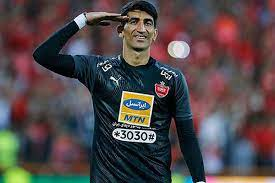

Alireza Beiranvand
(علیرضا بیرانوند)
Iranian footballer
Alireza Safar Beiranvand is an Iranian professional footballer who plays as
a goalkeeper for the Persian Gulf Pro League club Persepolis and the Iran national team. Beiranvand represented Iran internationally at the 2015
and 2019 AFC Asian Cups, and at the 2018 FIFA World Cup. Wikipedia
Born: September 21, 1992 (age 29 years)
, Sarab-e Yas
Height: 1.94 cm (1 in)
2022–: Persepolis
Number: 1
Siblings: Negin Beiranvand, Ahmadreza Beiranvand, Arezoo Beiranvand, Soheila Beiranvand, Sorour Beiranvand
Children: Barana Beiranvand, Taha Beiranvand
Parents: Morteza Safar Beiranvand, Simin Hooshyar